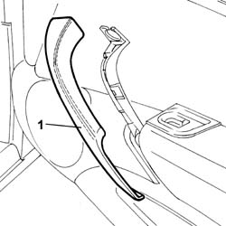
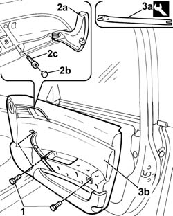
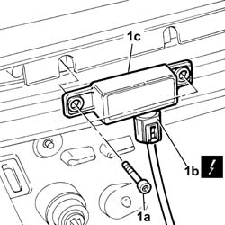

5580E72 AERIAL - PASSIVE ENTRY - front door (one), left or right - R.R.
- Path
- Procedures > 55 ELECTRICAL EQUIPMENT > 5580 SPECIAL ACCESSORIES > 5580E ANTI-THEFT DEVICE > 5580E72 AERIAL - PASSIVE ENTRY - front door (one), left or right - R.R.
- Kind
- repair procedure (removal / refitting; the operation number is the code)
- Applies to
- all engines; all production periods
- Interactive page
- https://sloeber94.github.io/elrnDB-lThss/en/#/150998
Applies to: all engines; all production periods
 Removing
Removing
 Refitting
Refitting- Disconnect the negative battery terminal.
See in Op. 7005E18 Front side door armrest - R.R.
1. Release the trim for the side door grab hand and remove it.

Applies to: all engines; all production periods
1. Undo the fixing bolts.
2. Lift up the door opening handle (2a), release the cap (2b) and undo the bolt underneath (2c).
3. Use the tool (3a) to remove the front door panel (3b).
 | Description | Code | Function |
|---|---|---|---|
3a | Knife | 1.878.077.000 | Removing rear side door inner panel |

Applies to: all engines; all production periods
1. Undo the fixing bolts (1a), disconnect the electrical connector (1b) and remove the passive entry aerial (1c).
 | Description | Connector |
|---|---|---|
1b | RF aerial on left front door for passive entry (NPE) | P094 |
| Description | Connector |
|---|---|---|
1b | RF aerial on right front door for passive entry (NPE) | P095 |

Applies to: all engines; all production periods
Refitting
Removing- Place the passive entry aerial in the housing and connect the eletrical connector.
| Description | Connector |
|---|---|---|
. | RF aerial on left front door for passive entry (NPE) | P094 |
| Description | Connector |
|---|---|---|
. | RF aerial on right front door for passive entry (NPE) | P095 |
- Secure the passive entry aerial using the bolts.
- Fit the inner door panel in place until the click of the retaining springs is heard.
- Tighten the bolts fixing the door panel.
- Reposition the trim for the side door grab hand.
See in Op. 7005E18 Front side door armrest - R.R.
- Connect the negative battery terminal.